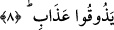

8. Kur’an aramızdan ona mı indirildi? diyerek kalkıp yürüdüler. Hayır! Onlar
kitabım hakkında şüphe içindedirler. Hayır! Azabımı henüz tatmadılar.
Biz, insanların başkanları, eşrâfı, en yaşlıları, en fazla sayıda mal ve avene sâhibi,
üstelik bütün şerefli mansıp ve makamlara en lâyık olanları olduğumuz halde “Kur’an”
(zikr) aramızdan ona mı indirildi? diyerek kalkıp yürüdüler.” Bu sözleriyle
maksadları, Kur’an’ın Allah’tan indirilmiş bir öğüt (zikr) olduğunu inkâr etmekti.
Bu ve benzeri bâtıl sözler, Mekkelilerin Hz. Peygamber’i (s.a.) yalanlamalarının
temelinde yatan şeyin, peygamberlik makamının içlerinden sadece ona verilip
kendilerinin bundan mahrum kalmasından dolayı içine girdikleri hased ve kıskançlık
krizleri ile sadece dünya metâını ölçü kabul etmeleri olduğunu gösterir. Halbuki onlar
hem dünya metâını kıstas kabul ederken, hem de kıyaslama yaparken hatâ etmişlerdir.
Birincisinde hatâ etmişlerdir; çünkü gerçek şeref, insanın kendisi dışındaki değil, bizzat
kendisinde bulunan üstün hasletlerden kaynaklanır. İkinci hususta hatâ etmiş olmaları ise
Hz. Peygamber’in (s.a.) şahsiyetini (nefs) kendi şahsiyetleri ile mukayese etmelerinin
fâsid bir kıyas olması hasebiyledir. Çünkü o ruhlar ruhudur; yaratılışın kökeninde o
yatar. Böyle bir varlık nasıl onlar gibi olabilir? Onun bir insan kılığında bulunması,
Âdem’den (a.s.) kalan genel bir mîrastır. Bu konuda birinin diğerinden farklı bir
özelliği bulunmamaktadır. Şu kadarı var ki Peygamber (s.a.)’in mübârek yüzünden
erkekler arasında benzeri görülmeyecek şekilde cemâl nurları parıldardı.
Ey saâdet güzelliği alnında görülen kişi,
Bu nasıl bir güzelliktir, kutsal ve yüce.
Burada günümüz zâhid ve âlimlerinden pek çoğunun, hakikat erbâbı rabbânî bir âlim,
kendilerinin anlamadığı bir hakikatten bahsettiği ve tadına varamadıkları bir inceliğe
temas ettiği zaman, bunların azgın nefislerinin, kendilerini onu yalanlamağa sevkettiğine
dâir de bir işâret vardır. Bunlar o âlimin nefeslerini ganimet bilip yararlanıp
nurlarından istifâde etmeye çalışacaklarına ‘bu hakikatler aramızdan keşf yoluyla bir tek
buna mı bildirildi?’ diyerek inkâr edip böylelerinden kuşkulanırlar. Nitekim Allah Teâlâ
şöyle buyuruyor:
“Hayır! Onlar kitabım hakkında şüphe içindedirler.”
Yâni, taklîde meyyâl olmaları ve Kur’an’ın bir hakikat olduğu sonucuna götürecek
deliller üzerinde düşünmekten yüzçevirmeleri sebebiyle Kur’an’dan ve vahiy
gerçeğinden kuşkulanırlar. Kesin bir inançları da yoktur. Birtakım vehimler arasında
bocalayıp dururlar. Kur’an’ın bazan sihir olduğunu söylerken bazan da uydurulmuş bir
şey olduğunu söylerler.
Burada ayrıca, Kur’an’ın kadîm olduğuna dâir de işâret vardır. Çünkü Allah Teâlâ
âyette Kur’an’ı “zikr” olarak adlandırmakta, sonra da kendi zâtına izâfe etmektedir.